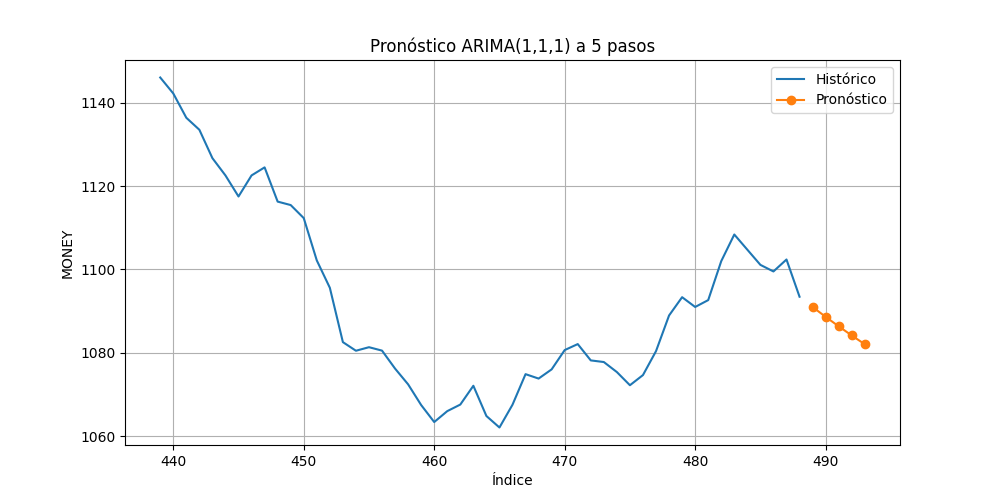

Resultado de la prueba ADF
- ADF Statistic: -0.4674
- p-value: 0.8982
- Interpretación: No estacionaria (se aplicó diferenciación).
Pronóstico a 5 pasos
|
Pronóstico |
| 489 |
1091.000217 |
| 490 |
1088.632964 |
| 491 |
1086.354759 |
| 492 |
1084.162252 |
| 493 |
1082.052221 |
Gráfico
